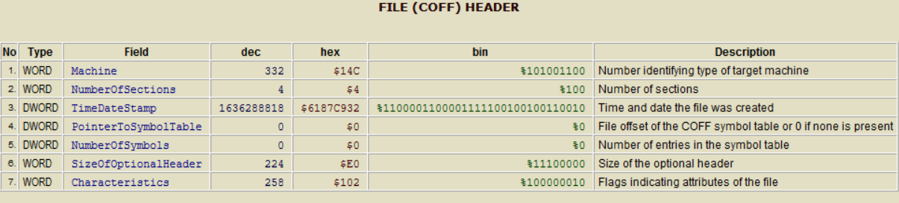
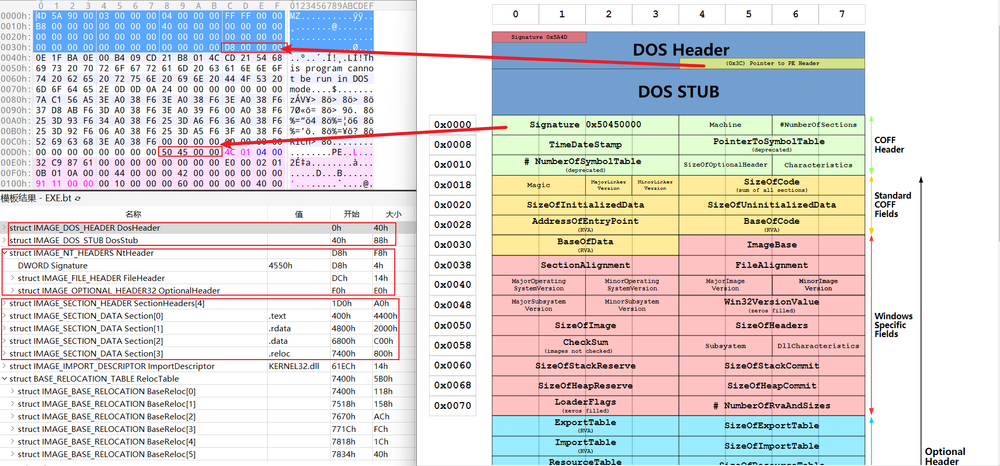
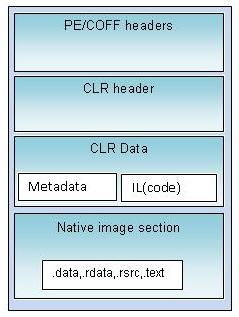
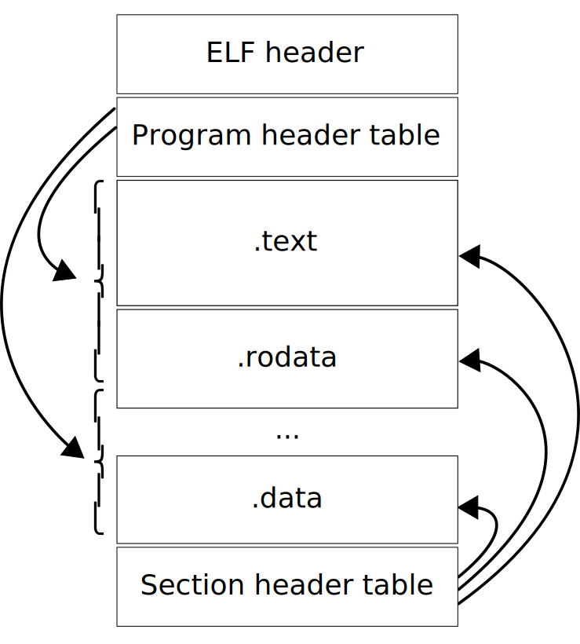
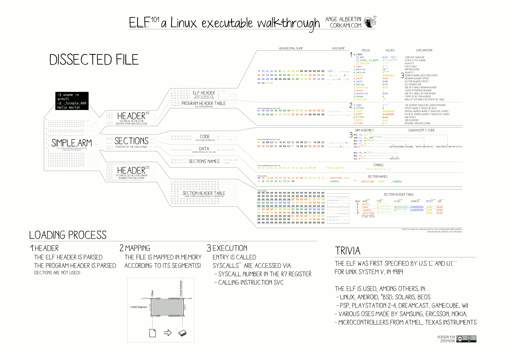
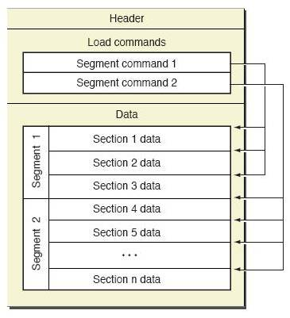
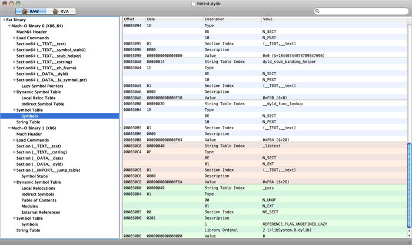

摘要
可执行文件是指可被某个平台加载执行的文件，分为编译型执行文件和解释型脚本文件，本文仅对编译文件进行说明。不同平台的可执行文件格式差别较大，可执行文件也是相对的。例如：对于Windows平台，Windows系统负责载入并执行.exe文件，.exe在windows系统下是可执行文件。相对于引导程序，Windows系统则是可执行文件，只是两者执行环境、扮演的角色不同。常见的可执行文件格式如下表：
| 简称 | 全称 | 系统 | 扩展名 | 查看工具 |
|---|---|---|---|---|
| COFF | Common Object File Format | Unix Like、Embedded Platform | .obj | objdump,dumpbin |
| PE | Portable Executable | Windows | .exe,.dll | PETool |
| ELF | Executable and Linkable | Linux、Unix Like | .o,.so | objdump,readelf |
| Mach-O | Mach Object | Mac OS | dylib | otool、MachOView |
可使用转换工具将不同格式的目标文件进行相互转换objconv。
COFF
通用目标文件格式，最早在Unix System V中使用，主要用于可执行文件、目标文件、共享库文件的一种文件格式。
| 文件结构 | 位置 | 作用 |
|---|---|---|
| 文件头 | 文件开始处 | 文件概览，控制其他节的布局 |
| 可选头 | 文件头后面 | 存放文件执行相关信息 |
| 节头 | 可选头后面，数量由文件头决定 | 维护代码节、数据节位置、大小相关信息 |
| 节数据 | 存放在节头中，由节头指定 | 包含程序数据、代码 |
| 重定位指令 | 存放在节头中，由节头指定 | 包含重定位节所需要的相关信息 |
| 行数 | 存放在节头中，由节头指定 | 存放每个符号的行号 |
| 符号表 | 存放在文件头中 | 包含文件定义、引用的每个符号 |
| 字符串表 | 符号表后面 | 存放符号名称 |
当前使用更多的是COFF文件格式的变种，如Windows系统PE、Linux的ELF、MacOS的Mach-O，以及其他类Unix环境，嵌入式环境（XCOFF、ECOFF），大多格式都包含上述结构。
PE
PE文件文件头由MS-DOS信息、PE签名信息、COFF文件头、可选头，可选头中一般存放着ms定义的信息。PE格式最新介绍见ms文档说明PE 文件格式和[PE文件细节](Inside Windows: Win32 Portable Executable File Format in Detail | Microsoft Docs)。
此处以vs编译出一可执行文件为例，其布局如下图

若是.NET程序其文件结构基于PE格式，只是在其中增加了CLR头和CLR数据。
ELF
一个ELF（Executable and Link able Forma）文件由ELF文件头和数据组成，数据包括了程序头表：描述了文件如何被加载到内存，节头表：描述了文件中的节表如何被链接器链接，以及数据，数据只能属于程序头表或者节头表，ELF文件可分别从执行视图和链接视图的角度进行分析。
 ELF文件被设计为便捷、可扩展、跨平台的格式，可以应用在不同大小端、不同处理器、不同指令集、不同操作系统中，这些属性在ELF结构中都有相应的字段进行描述。
Mach-O
Mach-O格式主要应用与OSX、macOS、IOS系统中，Mach-O文件由Mach-O头、加载命令、一个或多个段（每个段由0~255个节组成）几部分组成。采用胖二进制格式，即包含完整的多个平台架构的程序
 